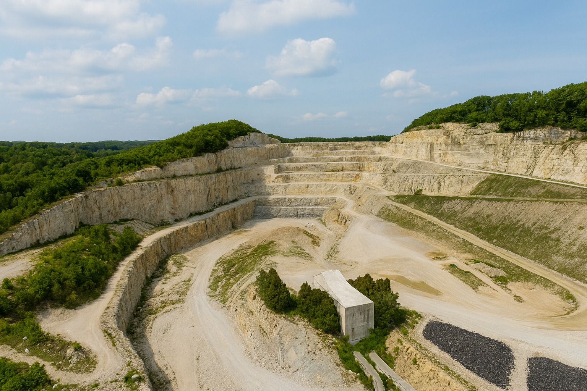
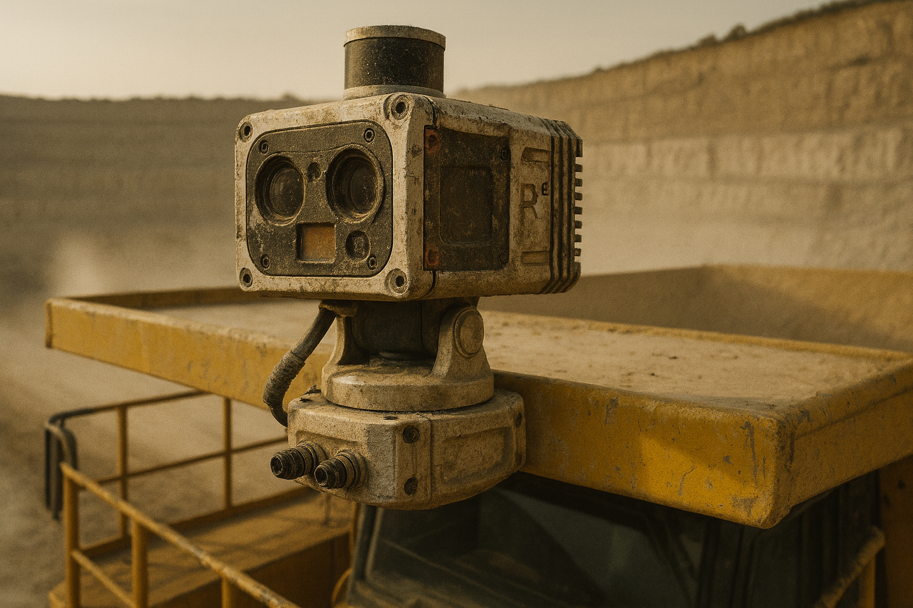

Mining autonomy
The problem
39 Bt
of rock quarried a year, almost all hauled by trucks with a driver in every seat
$2.3M
per truck for OEM autonomy, built for giant 24/7 mines
~0
autonomous trucks under 100 t, the size quarries actually run
25–43%
of US mining deaths involve powered haulage
Sources: GAIN 2024; Boliden/Komatsu 2021; GlobalData 2025; MSHA 2023–26
The solution

Customer economics
25–35%
of truck cost is the driver
13–20%
lower haul cost
90%+
fewer serious truck incidents
| 10-truck quarry | Payback |
|---|---|
| 1 shift | 2.3 yrs |
| 2 shifts | ~1 yr |
| 24/7 | ~4 mo |
Sources: BLS 2025; Cat Performance Handbook; Rio Tinto and BHP filings. Payback uses our assumed pricing.
Built today
Live demo
Hold Space, speak, release. Every machine answers in its own voice.
“Excavator one, start digging.”
“Truck one, go unload at excavator one.”
“Truck one, start digging.” (it talks back)
“Everyone stop.”
Credits (CC-BY 4.0): quarry scan 3Dnovator · Komatsu HD465 drcrazzie · excavator Dioramass design